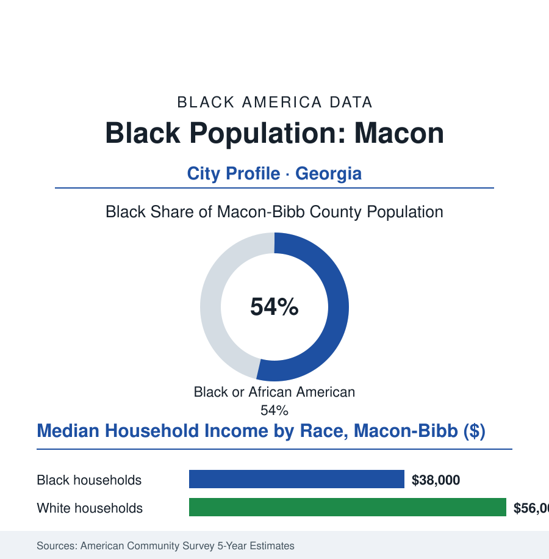

Black Cities
Black Macon: 82,000 People in the Heart of Georgia
Macon sits at Georgia's exact crossroads — a majority-Black city of music legends and medical centers, where the Ocmulgee's ancient banks meet the fall line's modern data.

Macon's Black community numbers roughly 82,000 people — about 54% of the consolidated city-county's 156,000 residents — at the fall line of the Ocmulgee River, dead center in Georgia, where Interstates 75 and 16 cross. It is a city whose musical output per capita beggars belief (Little Richard, Otis Redding, the Allman Brothers' adopted home) and whose everyday data describe the mid-size Black South's full condition. This article reads Macon's numbers.
The Crossroads and Its People
Macon's Black geography began in the cotton economy's fall-line logic — the city as the interior's trading post, its enslaved and then freed population building the neighborhoods (Pleasant Hill, one of the South's intact historic Black districts, its grid of cottages the preservation file's Georgia exemplar) and the institutions (Ballard-Hudson, the high school whose alumni midwifed the city's Black professional class; the Douglass Theatre, the vaudeville-era house where the blues and jazz circuits played Macon and where the restored marquee still lights Cherry Street). The twentieth century added the layers the census loves: the Warner Robins Air Force Base at the metro's edge (the federal employer underwriting a Black middle class across two counties, the veterans and civilian technicians of the employment file's public-sector rows in concentration), Robins' commuting field making Macon-Bibb's data inseparable from its whiter, wealthier neighbor county — the metro's racial bookkeeping split by a county line, the same trick as Benton Harbor's river in administrative dress. The music industry chapter is the city's singular asset and its standing irony: Capricorn Records and the Redding estate made Macon a pilgrimage line in the heritage economy (the Big House museum, the Redding statue on the riverwalk), the royalties and the tourism accruing unevenly against the neighborhoods that produced the sound — the creative-economy file's oldest argument, conducted here with uncommon documentary completeness. The consolidated government of the past decade (city and Bibb County merged, a Black-led administration in the record since) frames the modern era: the Ocmulgee Mounds' elevation to national-park candidacy (the Muscogee Nation's return to its ancestral city, the deepest history in this atlas meeting the newest federal designation), the downtown loft-and-arena revival, and Mercer University's expanding footprint in the medical and law rows.
The Data of the Middle City
Macon's ledgers state the mid-size Black city's national position with unusual clarity: the distress entries real (a Black median household income in the high thirty-thousands, poverty around a quarter of the city, the blight counts of the housing file along the old mill and rail edges, a hospital map consolidated into a single dominant system with the access questions that follow in the health file), the assets equally real (the Atrium/Navicent medical center and Mercer medicine anchoring a genuine eds-and-meds economy, Middle Georgia State's growth, housing costs still low enough to make the city a return-migration and retiree address in the Sun Belt data's second tier, the interstate crossroads keeping its logistics shelf full). Its Black political era is the datum the Georgia file keeps underlining: Bibb's consolidated government, its school board, and its judiciary among the South's working examples of Black metropolitan governance at the hundred-thousand scale — its policy arguments (the blight bond, the SPLOST lists, the arena's financing) the ordinary substance of self-government, which is precisely the point the PG County and DeKalb files make at larger scale. The forward rows are genuinely open in the current data: the national park's designation would rewrite the tourism ledger at a stroke; the base's missions hold the metro's floor; the downtown's census tracts post the small positive numbers (population stabilizing, permits rising, the Black-owned storefront count on Cherry and MLK corridors inching up in the business file's surveys) of a city whose decline narrative has begun, measurably, to bore its own residents.
Reading Macon's Numbers
Eighty-two thousand Black residents at the crossroads of Georgia: Macon is the cities file's median case — neither boomtown nor cautionary tale, a full Black civic world of churches, schools, soundstages, and hospital wards, running a consolidated government in the state's exact center. The census counts it in the middle of the table. Its people have always insisted, with discographies to prove it, on being counted at the center of the story instead.
More in Black Cities
Black Atlanta: Population, Distribution, and Growth of a Black Metropolis
Metro Atlanta holds more than two million Black residents — roughly one in three, second only to New York. The suburban distribution, migration history, and composition of Black Atlanta in the census data.
Black New York: The Largest Black Population in America
The New York metropolitan area holds about 3.4 million Black residents — more than any metro in the nation — and the city itself about two million. The census profile.
Black Washington: The District and the Metro
The Washington metro holds about 1.6 million Black residents, and the District itself — long a majority-Black city — now records a Black share near 41 percent. The census profile.
Source: U.S. Census Bureau, 2020 Census and American Community Survey 5-year estimates; Macon-Bibb County Government; Visit Macon and Middle Georgia State University data.